Esta apostila acompanha a sua formação em Thai Massage Clínica. Ela foi pensada para ser o seu material de consulta antes, durante e depois da prática.
A Thai Massage (Nuad Thai) é uma arte terapêutica que une pressão rítmica, alongamentos assistidos, mobilizações articulares e uma atitude de cuidado consciente. No contexto clínico, ela ganha um olhar ainda mais atento: avaliação, objetivo terapêutico, segurança e adaptação da técnica ao corpo real que está à sua frente.
Aqui você vai encontrar a história da tradição, os fundamentos teóricos, os princípios de aplicação, os cuidados de segurança e, no coração deste material, o catálogo das manobras, cada uma com imagem, objetivo e passo a passo.
Como usar esta apostila
Estude a teoria primeiro
Os módulos 1 a 4 dão o contexto. Entender o porquê de cada gesto muda a qualidade do seu toque.
Pratique com a ficha ao lado
Cada manobra tem uma ficha com posição, objetivo e sequência. Use o tempo indicado na ficha para rever o trecho exato da aula.
Anote sem medo
Os espaços de anotação são seus. Registre sensações, ajustes de postura e o que funcionou com cada cliente.
Respeite os limites
Releia o módulo de segurança sempre que receber um cliente com condição de saúde específica.
"A técnica abre a porta. A presença é o que cura."Yumi Kataoka
Sobre a autora
Yumi Kataoka é massoterapeuta, formadora e mentora com mais de 17 anos de atuação, especialista em Thai Massage Clínica e Consciência Corporal. Fundadora do Instituto Yumi Kataoka.
Thai Massage Clínica
Sumário
Sua jornada de estudo
01História da Thai MassageAyurveda e os rishis, Jivaka, a chegada do budismo, Wat Pho, o reconhecimento oficial e as escolas
02Fundamentos teóricosLom pran, as dez linhas Sen, pontos de Wat Pho, os elementos e as atitudes do coração
03Princípios de aplicaçãoPostura do terapeuta, ferramentas do corpo, ritmo e respiração
04Segurança e olhar clínicoAnamnese, contraindicações, cuidados e preparação do atendimento
05Catálogo de manobrasPrincípios, abertura e 42 fichas: dorsal, ventral, lateral, sentado e complementos do livro
06AnexosFicha de anamnese, glossário, referências e anotações
Thai Massage Clínica
01
Módulo
História da Thai Massage
Uma tradição viva, transmitida de mestre para aprendiz por mais de dois milênios, nos templos, nas famílias e nas aldeias do antigo Sião.
Módulo 01 · História
Módulo 01 · História
Nuad Thai: o nome e o sentido
Em tailandês, นวด (nuad) significa massagear, tocar com intenção de curar. A forma tradicional é chamada de Nuad Boran (นวดแผนโบราณ), "massagem antiga", ou simplesmente Nuad Thai. No Ocidente, ficou conhecida como Thai Massage ou massagem tailandesa.
Ela faz parte de um sistema maior, a Medicina Tradicional Tailandesa, que inclui também a fitoterapia, a alimentação, as compressas de ervas (luk pra kob), a autoterapia com posturas (ruesi dat ton) e a dimensão espiritual do cuidado.
O país dos mantos amarelos
A Tailândia é conhecida como o país dos mantos amarelos, por causa do grande número de monges budistas presentes em todas as cidades. O budismo é a principal religião do país: segundo um censo de 1960, cerca de 94% da população se declarava budista, e o rei é coroado como protetor e guardião dessa fé.
Entender a Thai Massage é entender essa raiz. Antes mesmo de existir a Tailândia como a conhecemos, a doutrina do Buda, vinda da Índia, já era seguida pelos reinos que dominavam a região. E foi junto com ela que chegaram os conhecimentos de cura.
As influências que formaram a Thai Massage
Ayurveda e Yoga (Índia): a ideia de canais de energia e os alongamentos posturais.
Medicina chinesa: o trabalho sobre pontos e o raciocínio de fluxo e bloqueio.
Budismo Theravada: a meditação, a atenção plena e a prática da compaixão (metta).
Saberes locais: a cultura Mon-Khmer, a massagem de família e os curandeiros das aldeias.
Uma tradição oral
Durante séculos, o conhecimento foi transmitido de forma oral e prática, nos mosteiros (wat) e dentro das famílias. Os monges dominavam a leitura e a escrita e eram, muitas vezes, os médicos da comunidade. Parte dos registros escritos se perdeu em 1767, quando a antiga capital Ayutthaya foi destruída durante a guerra com a Birmânia.
Módulo 01 · História
Módulo 01 · História
Índia, berço do Ayurveda
A Índia é um território de enorme riqueza histórica e espiritual, com vestígios de presença humana que remontam a cerca de 400.000 anos, às margens do rio Soan. É o berço do hinduísmo, do budismo, do jainismo e do siquismo, terra de Buda, Gandhi e Tagore. Deu ao mundo os algarismos que usamos, o conceito do zero e um dos sistemas médicos mais antigos da humanidade: o Ayurveda, considerado pelos indianos um saber recebido dos deuses.
A lenda dos rishis
Conta a tradição que, há cerca de seis mil anos, a Índia estava enferma. As pessoas sofriam de muitas doenças e os curandeiros não sabiam como ajudar. Um grupo de sábios decidiu então partir em peregrinação para as montanhas do Himalaia, onde meditaram e oraram em busca de inspiração para socorrer o povo.
Esses sábios são os rishis, palavra sânscrita que significa "videntes". Segundo a tradição, foi por meio de visões e diálogos com os antigos deuses que eles receberam o conhecimento que deu origem ao Ayurveda.
Primeiro pilar
A alimentação
Os rishis organizaram os alimentos em grupos e sabores e concluíram que, com eles, era possível prevenir, tratar e curar doenças. Por isso, alguns historiadores chamam os indianos de primeiros nutrólogos do mundo.
Segundo pilar
As plantas
Depois, catalogaram plantas e suas formas de uso. Esse conhecimento influenciou os sistemas médicos do Sudeste Asiático e de outras culturas vizinhas, entre eles a medicina tradicional tailandesa.
"O mesmo sopro de cuidado que nasceu no Himalaia chega hoje às suas mãos."
Módulo 01 · História
Módulo 01 · História
As raízes indianas
Para entender a Thai Massage é preciso voltar à Índia antiga. Os rishis, sábios da tradição védica, desenvolveram um sistema de cuidado que ia muito além dos remédios: técnicas manuais, massagem e outros tratamentos pelo toque, além da higiene, da hidratação e da manipulação da pele, dos músculos e das articulações.
Os indianos estiveram entre os primeiros povos a estudar anatomia de forma sistemática. Sabiam diferenciar artérias e veias, criaram instrumentos cirúrgicos e realizaram algumas das primeiras cirurgias da história, como reconstruções de nariz e orelhas. Essa medicina cuidava do corpo e também da mente, com uma dimensão espiritual voltada a acalmar o sofrimento.
No início, a cura era cercada de rituais, orações e mantras. Com o tempo, passou a integrar ervas, óleos e exercícios para os problemas comuns de saúde, registrados nos textos do Atharva Veda. É dessa base que nasce o Ayurveda.
"Brahma deu a cada planta um aroma e uma cor, e o ser humano encontrou na natureza a sua farmácia."Lenda védica
Conta uma lenda dos Vedas que, quando Brahma criou o mundo e o ser humano, o deus Indra temeu que as pessoas adoecessem e pediu que as plantas recebessem o poder de curar. Brahma atendeu ao pedido e deu a cada planta aromas e cores próprios. Assim o ser humano passou a usar as plantas em infusões, misturadas a óleos para massagear o corpo e aplicadas sobre a pele.
O encontro com o budismo
Por volta de 500 a.C., o budismo surgiu em Magadha, no norte da Índia, e influenciou o Ayurveda. Os rituais perderam espaço e os monges passaram a aprender e transmitir sobretudo a fitoterapia e as técnicas manuais. São esses monges que, segundo a história, levaram o conhecimento médico da Índia para a região então chamada de Suvarnabhumi, a Terra do Ouro. Mas a região já tinha seus próprios saberes de cura, enriquecidos por migrações e pelo comércio entre os povos.
Módulo 01 · História
Módulo 01 · História
Jivaka, o médico do Buda
O Buda, Sidarta Gautama, nasceu no norte da Índia, príncipe do reino de Kapilavastu. Abandonou o palácio em busca de compreender a causa do sofrimento humano e reuniu uma grande comunidade de monges, a sangha. Entre seus seguidores estava o rei Bimbisara, que governava o estado de Magadha.
Conta a tradição que, em Magadha, um recém-nascido foi deixado em uma caixa de madeira do lado de fora dos muros do palácio. O príncipe Abhaya, filho de Bimbisara, ouviu o choro ao voltar de viagem, recolheu a criança e decidiu criá-la como filho. Deu a ela o nome de Jivaka Komarabhacca, "aquele que foi criado pelo príncipe".
Curioso pela medicina, Jivaka foi estudar em Taxila, na região de Gandhara (atual Paquistão), um dos grandes centros de saber da época. Ali estudou por sete anos com um mestre de Ayurveda, conhecedor das plantas e da cirurgia.
"Não encontrei nenhuma planta que não tivesse poder de curar."A prova final de Jivaka
No fim dos estudos, o mestre pediu a Jivaka uma última tarefa: percorrer as colinas de Taxila e trazer todas as plantas que não tivessem nenhuma utilidade medicinal. Depois de dias observando a flora, ele voltou de mãos vazias. O mestre sorriu, deu a ele algumas moedas para a viagem de volta e disse que não havia mais nada a ensinar.
De volta a Magadha, Jivaka tornou-se médico do rei Bimbisara, do próprio Buda e da comunidade de monges. Os textos do budismo Theravada contam que foi ele quem tratou o pé do Buda quando este foi ferido por uma pedra. Tornou-se o médico mais renomado da Índia de seu tempo.
Shivago Komarpaj
Na Tailândia, pela pronúncia local, Jivaka é chamado de Shivago e venerado como homem santo e pai da medicina tailandesa. Até hoje as escolas de Thai Massage recitam mantras em sua honra antes e ao final de cada aula e de cada atendimento. Os historiadores consideram essa ligação mais simbólica do que documental, mas ela dá sentido ao gesto: cada sessão honra uma linhagem de cuidadores.
Módulo 01 · História
Módulo 01 · História
O budismo chega à Tailândia
Após a morte do Buda, um concílio dividiu a comunidade em duas grandes correntes. A Mahayana se espalhou em direção à China e ao norte da Ásia. A Theravada, a "doutrina dos anciãos", manteve a disciplina monástica mais próxima dos ensinamentos originais. É a Theravada que chegou ao Sudeste Asiático e que predomina até hoje na Tailândia.
Existem diferentes relatos sobre essa chegada. Um deles, registrado no Mahavamsa (as crônicas budistas do Sri Lanka), remete ao imperador indiano Ashoka (274 a 232 a.C.), que enviou missionários às nove regiões do mundo então conhecido. Além do conhecimento espiritual, esses monges levavam também conhecimentos médicos, que se misturaram às tradições locais.
Suvarnabhumi
A Terra do Ouro
Uma das regiões que receberam os missionários de Ashoka. Abrangia partes dos atuais Myanmar, Tailândia, Camboja e Laos. Para lá foram enviados os monges Sona e Uttara, vindos de Magadha. A cultura Mon-Khmer que prosperava ali acolheu a filosofia budista.
Dvaravati
A Primeira Cidade
O antigo reino Dvaravati ocupava a região central da Tailândia e tinha como capital a atual Nakhon Pathom, do páli Nagara Pathamam, "Primeira Cidade". É considerada a cidade mais antiga do país e foi onde o budismo se firmou antes de se espalhar por todo o território.
A Roda do Dhamma
Nas escavações em Nakhon Pathom e arredores foram encontradas grandes rodas de pedra, a Dharmachakra ou Roda do Dhamma, símbolo do ensinamento do Buda. Elas são usadas como marco histórico da chegada do budismo à Tailândia e reforçam a tese de que o conhecimento trazido pelos monges da Índia está na origem da medicina tailandesa e da Thai Massage. Uma delas está exposta no Museu de Korat, em Nakhon Ratchasima.
Do sul ao norte
Hoje, o centro de Bangkok guarda o templo de Wat Pho, berço da escola do sul. Ao norte, Chiang Mai concentra escolas, hospitais de medicina tradicional e retiros de formação, e é destino frequente de quem vai estudar a Thai Massage na fonte.
Módulo 01 · História
Módulo 01 · História
Linha do tempo
Séculos VI a V a.C.
Vida do Buda e de Jivaka Komarabhacca (Shivago), o médico do Buda, considerado pela tradição o pai da medicina tailandesa.
Século III a.C.
O imperador Ashoka envia missionários budistas Theravada a nove regiões, entre elas Suvarnabhumi, a Terra do Ouro.
Reino Dvaravati
O budismo se firma na região central, com capital em Nakhon Pathom. A Roda do Dhamma marca esse período.
1767
Queda de Ayutthaya. Muitos textos de medicina tradicional são destruídos e a transmissão volta a depender ainda mais da tradição oral.
Rama I
Reorganização do saber médico, incluindo o texto Tamra Loke Nitan, uma das fontes que descrevem o trajeto das linhas Sen.
Rama III, século XIX
No templo de Wat Pho, em Bangkok, o conhecimento médico é gravado em placas de pedra, com diagramas do corpo, das linhas e dos pontos de massagem. O templo recebe também as estátuas dos eremitas em autoalongamento (ruesi dat ton).
Rama V
O Texto Real de Medicina Tradicional Tailandesa padroniza nomes e trajetos das linhas usados até hoje.
Século XX
Surgem as escolas formais, em Bangkok e em Chiang Mai. A prática se organiza em currículos e passa a ser ensinada a estrangeiros, chegando ao Ocidente e ao Brasil.
2019
A UNESCO inscreve o Nuad Thai na Lista Representativa do Patrimônio Cultural Imaterial da Humanidade.
Módulo 01 · História
Módulo 01 · História
Da aldeia ao hospital
No passado, uma prática dos vilarejos, passada de geração em geração. No século XX, o governo tailandês passou a pesquisar e reconhecer oficialmente essa tradição.
1983
O governo cria um projeto de revitalização da técnica, com intercâmbio de conhecimentos entre os praticantes e um sistema de ensino no país.
1987
Primeiros ensaios clínicos e início da implantação da massagem em hospitais.
1993
Uma lei troca o termo "antigo" por "tradicional": a Nuad Pan Boran passa a ser Nuad Pan Thai, hoje simplesmente Nuad Thai. No mesmo ano, o governo realiza o primeiro curso oficial de formação, com 330 horas, que forma 500 terapeutas.
24 de setembro de 2001
O "Dia D": o Ministério da Saúde da Tailândia reconhece a Thai Massage como parte integrante da medicina tradicional, abrangendo avaliação, tratamento, prevenção, promoção da saúde e reabilitação.
2007
Uma resolução garante o reembolso das sessões realizadas em unidades de saúde credenciadas. A técnica passa a integrar a atenção primária à saúde pública do país.
A definição oficial
Para o Ministério da Saúde Pública da Tailândia, o Nuad Thai é a integração da ciência e da arte no cuidado tradicional em saúde: pressionar, girar, amassar, apertar, alongar, puxar, aplicar compressas de ervas quentes e manipular pontos específicos ao longo das vias energéticas para restaurar o fluxo de energia e a circulação, aliviando dor, rigidez, tensão e outros sintomas.
Duas formas de Nuad Thai
Nuad Raksa
Nuad Thai terapêutico
Uso clínico, baseado em pontos e linhas, como terapia complementar para queixas específicas. É a raiz da Thai Massage Clínica.
Nuad Phua Sukaphap
Promoção da saúde
Voltado ao relaxamento, ao bem-estar e à melhora geral da saúde.
Módulo 01 · História
Módulo 01 · História
As duas grandes escolas
Embora exista uma base comum, a Thai Massage se desenvolveu com sotaques regionais. Os dois estilos mais conhecidos são o do sul (Bangkok) e o do norte (Chiang Mai).
Sul · Bangkok
Estilo Wat Pho
Ritmo mais firme e dinâmico, pressões mais profundas com polegares e palmas, trabalho preciso sobre linhas e pontos. Muito usado com foco terapêutico.
Norte · Chiang Mai
Estilo do norte
Ritmo mais lento e envolvente, ênfase em alongamentos amplos e balanços, uso generoso do peso do corpo, joelhos e pés. Sensação de fluidez e entrega.
Da tradição à clínica
Herdeira do Nuad Raksa, a Thai Massage Clínica preserva a essência da tradição (o respeito, o ritmo, a atenção plena) e acrescenta o raciocínio terapêutico: escuta da queixa, avaliação da postura e da mobilidade, escolha das manobras pelo objetivo e reavaliação ao final.
Avaliar
Ouvir a queixa, observar postura, testar amplitude e identificar contraindicações.
Escolher
Selecionar as manobras pelo objetivo da sessão, não por uma sequência fixa.
Reavaliar
Comparar antes e depois e orientar o cliente para o autocuidado.
Reflexão
Conhecer a história não é só curiosidade cultural. Quando você conta ao seu cliente de onde vem a técnica, você transforma uma sessão em uma experiência, e o cliente percebe o valor do que recebe.
Módulo 01 · História
02
Módulo
Fundamentos teóricos
Os canais por onde flui o vento vital, os elementos que compõem o corpo e a atitude de coração que sustenta cada toque.
Módulo 02 · Fundamentos
Módulo 02 · Fundamentos
Lom pran e as linhas Sen
A teoria tradicional descreve o corpo atravessado por uma rede de canais, as linhas Sen, por onde circula lom pran, o vento vital. Fala-se em 72.000 linhas, das quais dez são as principais (Sen Sip). Quase todas nascem ao redor do umbigo, a uma distância medida em onculis (a largura de uma falange do dedo do próprio cliente), e terminam em um ponto de exteriorização: narinas, olhos, ouvidos, dedos, língua ou orifícios do baixo ventre.
Quando o vento flui livre, há saúde. Quando é perturbado pelo Chakala Wayo, o "vento ruim", o desequilíbrio aparece primeiro nos músculos (dor nas costas, no pescoço, na lombar, dor de cabeça de origem occipital), depois no plano energético e funcional e, se persistir, pode chegar a alterações orgânicas. As dores costumam vir acompanhadas de componentes emocionais, como insegurança e medo.
Linha
Origem e trajeto resumido
Exteriorização
Sumana
2 onculis acima do umbigo, sobe pelo esterno até a língua
Língua e garganta
Itha
2 onculis à esquerda do umbigo, desce a perna, sobe pela parte posterior até a cabeça
Narina esquerda
Pingkhala
Espelho de Itha, à direita
Narina direita
Kalathari
1 onculi acima do umbigo, cruza o tronco e vai para braços e pernas
Dedos das mãos e dos pés
Sahatsarangsi
4 onculis à esquerda do umbigo, percorre a perna e sobe até o rosto
Olho esquerdo
Tawaree
Espelho de Sahatsarangsi, à direita
Olho direito
Lawusang
6 onculis à esquerda do umbigo, sobe pelo tronco e pescoço
Ouvido esquerdo
Ulangka
Espelho de Lawusang, à direita
Ouvido direito
Nanthakrawat
Também chamada Sukumang. Abaixo e à esquerda do umbigo
Ânus
Kitchana
Também chamada Sikhinee. Abaixo e à direita do umbigo
Uretra
Para a prática clínica
Você não precisa "acreditar" em energia para usar o mapa das Sen. Muitos trajetos coincidem com septos musculares, feixes neurovasculares e cadeias miofasciais. Use o mapa como guia de onde e em que direção trabalhar.
Módulo 02 · Fundamentos
Módulo 02 · Fundamentos
Mapa das linhas principais
Ilustração esquemática para estudo. Os trajetos variam entre as fontes tradicionais (Wat Pho, Tamra Loke Nitan e Texto Real de Rama V).
●Itha e Pingkhala: descem pelas pernas, contornam o joelho e sobem pela parte posterior, ao lado da coluna, até as narinas.
●Kalathari: linha cruzada que liga as cinturas escapular e pélvica aos dedos.
●Sahatsarangsi e Tawaree: percorrem a perna e o pé, sobem pelo tronco e pescoço até os olhos.
●Lawusang e Ulangka: trajeto curto, do abdômen ao ouvido.
●Nanthakrawat e Kitchana: baixo ventre, para ânus e uretra.
●Sumana: linha central, do esterno até a língua.
●Umbigo: o centro de onde nascem as linhas.
Módulo 02 · Fundamentos
Módulo 02 · Fundamentos
As linhas em detalhe
Sumana
A linha central. Começa 2 onculis acima do umbigo, passa sobre o esterno e sobe até a língua. Nas placas de Wat Pho aparece ligada ao ponto Chiwhasadom, que governa a língua, a boca e os cinco sabores.
Indicações: problemas respiratórios como asma e bronquite, gripe e tosse, dor de cabeça, dor de garganta, dor no peito e problemas cardíacos, náusea e dor abdominal, dores nas costas e crises emocionais de ansiedade, angústia e tristeza. Os principais órgãos estimulados são os intestinos, o coração, os pulmões e os órgãos reprodutores.
O esterno e a cadeia postural
O esterno é ponto-chave para a respiração e para a posição da cabeça. Quando os músculos que se ligam a ele encurtam, o peito se fecha, os ombros giram para dentro e a coluna torácica arredonda (cifose), reduzindo a expansão das costelas. A cabeça vai à frente, comprime a região entre o occipital e as cervicais e obriga músculos como o levantador da escápula a trabalhar em excesso, gerando dores de cabeça e tensão no pescoço. Para compensar, o quadril bascula à frente (anteversão), sobrecarregando a lombar e comprimindo os órgãos abdominais. Liberar a linha Sumana é abrir o peito e devolver espaço à respiração.
Itha e Pingkhala
Representam a dualidade: esquerda e direita, lunar e solar, frio e quente. Pelo equilíbrio entre essas forças opostas, elas harmonizam os elementos, o que a medicina tailandesa chama de Som Dun. Partem de 2 onculis ao lado do umbigo, descem pelas pernas, contornam o joelho, sobem pela coxa até os glúteos e seguem pelas costas, ao lado da coluna (sacro, lombar, torácica, cervical), passando pela cabeça até as narinas. São regidas pelo vento Asasa Pasasa Wata, que nasce entre o esterno e o umbigo e se dirige às narinas. Nas placas de Wat Pho, Itha é chamada de Jantala Kala (lunar) e Pingkhala de Surya Kala (solar), e cada linha tem 36 pontos descritos, na frente e nas costas.
Dica clínica
Dificuldade para flexionar o tronco à frente: trabalhe a linha 2 das costas. Dificuldade para estender (curvar para trás): trabalhe a linha 1. Desequilíbrios típicos: dor ao longo do trajeto, alterações de temperatura e distúrbios nasais.
Módulo 02 · Fundamentos
Módulo 02 · Fundamentos
Kalathari
Linha cruzada. Começa 1 onculi acima do umbigo e se divide em duas linhas superiores e duas inferiores, em diagonal, formando um X na frente do corpo. As inferiores descem pela parte interna da coxa (adutores) e pela perna, junto à tíbia, até os pés, onde se abrem em cinco linhas. As superiores vão aos ombros, passam pelo deltoide anterior e descem pela parte interna dos braços até a palma, abrindo-se para os cinco dedos.
Influencia as duas grandes cinturas do corpo (pélvica e escapular) e muitas articulações. É usada nos desajustes articulares e no movimento dos dedos. Os textos antigos também a relacionam a desordens mentais e emocionais. Existem três traçados descritos: o dos diagramas de Wat Pho, o do Tamra Loke Nitan (reinado de Rama I) e o do Texto Real de Rama V, que inclui um ramo pelas costas, dos ombros até a lombar.
Sahatsarangsi e Tawaree
Também chamadas Hadsarangsi e Tawaree. Nascem a 4 onculis do umbigo, descem pela parte medial da coxa ao lado do reto femoral, seguem junto à tíbia, contornam o maléolo medial e percorrem a sola do pé (arco medial, base dos dedos, arco lateral). Voltam por trás do maléolo lateral, sobem pela lateral da perna e da coxa até a crista ilíaca, passam sob as costelas até o mamilo, a clavícula, o esternocleidomastoideo e a lateral do rosto, até o olho.
Indicações: olhos secos, cansados ou irritados, dor e instabilidade no joelho, formigamento e dificuldade de movimento nas pernas, dor no tibial anterior, paralisia facial, dor cervical e torcicolo, desconforto respiratório e diafragmático, dor de garganta e de dente.
Nas placas de Wat Pho
Os diagramas de Wat Pho mostram as dez linhas na frente e nas costas do corpo, com os pontos onde cada uma "vem para fora", ou seja, onde fica mais sensível à palpação e onde seus desequilíbrios se manifestam. Além das linhas, as placas citam:
Amapluk
Região do vento ligada à paralisia e à perda de movimento das pernas
PithaKhun
Vento da região pélvica
Chiwhasadom
Ponto de equilíbrio dos cinco sabores, ligado à língua, à boca e a Sumana
Ananta Jakrawata
Ponto de concentração descrito na frente do corpo
Módulo 02 · Fundamentos
Módulo 02 · Fundamentos
Lawusang e Ulangka
Nascem a 6 onculis do umbigo (Lawusang à esquerda, Ulangka à direita) e têm trajeto curto: sobem até o mamilo, passam pelo terço médio da clavícula, sobem pelo pescoço por trás do esternocleidomastoideo, contornam a orelha e terminam no trago, na altura da articulação temporomandibular. Em Wat Pho aparecem com os nomes Jantapusang e Rucham, usados nos diagramas da época de Rama III.
Indicações: dores de ouvido, zumbido, dificuldade de audição, problemas vestibulares e vertigem, disfunção da ATM, dor de dente, insônia e paralisia facial.
Nanthakrawat e Kitchana
Também chamadas Sukumang e Sikhinee. Nascem 2 onculis ao lado e 2 abaixo do umbigo. Nanthakrawat (à esquerda) segue para o ânus e Kitchana (à direita) para a uretra. Relacionam-se com a digestão, a eliminação e o sistema urogenital.
Os pontos de Wat Pho
As placas de Wat Pho descrevem pontos de acupressão ao longo de cada linha, com sua indicação. Como exemplo, estes são os 18 pontos da linha Itha, na parte frontal do lado esquerdo do corpo:
1
Perda do olfato e dificuldade de respirar pelo nariz
10
Dor na região temporal
2
Estalos e travamento da mandíbula ao bocejar
11
Dor aguda na escápula
3
Dificuldade e perda progressiva de audição
12
Cãibras e dormência na parte posterior da coxa e no adutor magno
4
Ingurgitamento mamário
13
Inflamação de gânglios linfáticos, apoio à próstata
5
Tensão e dores nas coxas
14
Constipação
6
Desconforto na parte interna do joelho
15
Movimento do cólon descendente
7
Pernas cansadas e doloridas
16
Dormência e frio no pé
8
Vento (lom pran) bloqueado no quadril e nas pernas
17
Cãibras agudas
9
Dor, inflamação ou calor na sola do pé
18
Movimentos involuntários do pé (clônus)
Atenção
O ponto 15 é tradicionalmente associado ao trabalho de parto. Por isso, pontos abdominais e da linha Itha devem ser evitados em gestantes.
Módulo 02 · Fundamentos
Módulo 02 · Fundamentos
Os quatro elementos (Thatu)
Na Medicina Tradicional Tailandesa, o corpo é formado por quatro elementos. O desequilíbrio entre eles explica boa parte dos sintomas, e a massagem é uma das formas de devolver a harmonia. Cada elemento tem seu número auspicioso, seguindo a mística do budismo tailandês.
ดิน
Terra (Din)
Estrutura: ossos, músculos, tendões, órgãos. Associada ao número 20. Excesso traz rigidez e peso; falta traz fraqueza.
น้ำ
Água (Nam)
Os líquidos do corpo, tradicionalmente 12: bile, muco, linfa, sangue, suor, gordura, lágrimas, saliva, secreção nasal, líquido sinovial, urina, entre outros.
ลม
Vento (Lom)
Movimento: respiração, circulação, impulsos nervosos. É o elemento mais trabalhado pela massagem.
ไฟ
Fogo (Fai)
Calor e transformação: metabolismo, digestão, temperatura do corpo, envelhecimento.
Os elementos no abdômen
Um diagrama de Wat Pho mostra doze pontos ao redor do umbigo ligados aos elementos. Os quatro principais indicam excesso ou estagnação:
Abaixo do umbigo: vento em excesso
Acima do umbigo: fogo em excesso
À direita do umbigo: água estagnada
À esquerda do umbigo: terra estagnada
Direita e esquerda do cliente. O trabalho abdominal exige formação específica, pressão suave e respeito às contraindicações.
Módulo 02 · Fundamentos
Módulo 02 · Fundamentos
As quatro atitudes do coração
A Thai Massage nasce dentro de uma tradição budista. Por isso, a qualidade interna do terapeuta é tão importante quanto a técnica. Os Brahmaviharas são quatro estados que guiam o atendimento:
Metta
Bondade amorosa. Desejar genuinamente o bem de quem você atende.
Karuna
Compaixão. Perceber o sofrimento do outro e agir para aliviá-lo.
Mudita
Alegria compartilhada. Celebrar a melhora e o bem-estar do cliente.
Upekkha
Equanimidade. Estar presente sem julgamento e sem apego ao resultado.
Wai Khru: a homenagem aos mestres
Antes de cada atendimento, o terapeuta faz o Wai Khru: um momento de silêncio, mãos unidas diante do peito, em respeito a Shivago e a todos os mestres que mantiveram viva essa tradição. Nas escolas tailandesas, esse momento é acompanhado de um mantra em páli recitado no início e no fim de cada aula.
Mesmo em um atendimento clínico, esse gesto tem função prática: é a pausa que separa o que veio antes da sessão e coloca você inteira no cuidado que vai começar.
"A massagem é meditação em movimento, para quem recebe e para quem aplica."
Módulo 02 · Fundamentos
Módulo 03 · Princípios de aplicação
A postura do terapeuta
Na Thai Massage, a força não vem dos braços. Ela vem do peso do corpo, transferido com o quadril e o centro. Um terapeuta bem posicionado trabalha com profundidade e sem se machucar.
Base estável: joelhos afastados, coluna neutra, ombros relaxados.
Braços retos: cotovelos estendidos, a pressão nasce da inclinação do tronco.
Movimento a partir do centro (hara): o quadril conduz, as mãos apenas transmitem.
Proximidade: fique perto do cliente. Distância obriga você a usar força muscular.
Pausas e trocas de apoio: mude de posição antes de sentir desconforto.
As ferramentas do corpo
Ferramenta
Qualidade do toque
Uso mais comum
Palmas
Ampla, acolhedora, aquece
Abertura, pressões ao longo das linhas
Polegares
Precisa e profunda
Pontos e trabalho detalhado nas Sen
Antebraços
Larga e firme
Costas, coxas, glúteos
Cotovelos
Muito profunda, pontual
Glúteos, região plantar (com cautela)
Joelhos
Peso estável
Coxas e pernas em alongamentos
Pés
Ampla, com peso total
Pernas, glúteos e alongamentos de tração
Ritmo, respiração e pressão
Ritmo
Lento, constante e previsível. O corpo relaxa quando sabe o que vem a seguir. Pressione, sustente, solte.
Respiração
Aprofunde a pressão na expiração do cliente. Respire junto com a pessoa e use a sua respiração para se manter presente.
Escala de pressão
Combine com o cliente uma escala de 0 a 10. Trabalhe entre 5 e 7, a "dor boa". Acima disso, o corpo se defende e a técnica perde o efeito.
Módulo 03 · Aplicação
Módulo 03 · Princípios de aplicação
Estrutura de uma sessão
A ordem tradicional percorre o corpo dos pés à cabeça, passando por diferentes posições. Na abordagem clínica, essa estrutura é uma referência, adaptada ao objetivo de cada atendimento.
1 · Acolhimento
Anamnese, avaliação e combinados. Wai Khru: um momento de silêncio e intenção antes de tocar.
2 · Decúbito dorsal (barriga para cima)
Pés, pernas e linhas das pernas, alongamentos de quadril, abdômen (com cautela), braços e mãos.
3 · Decúbito lateral
Linhas laterais da perna, quadril, região lombar, ombro e torções suaves.
4 · Decúbito ventral (barriga para baixo)
Parte posterior das pernas, glúteos, costas e alongamentos em extensão.
5 · Sentado
Ombros, trapézio, pescoço, torções e alongamentos do tronco.
6 · Cabeça e face
Couro cabeludo, face e encerramento em repouso.
7 · Fechamento
Reavaliação, orientação de autocuidado e registro na ficha do cliente.
Ambiente
Futon firme no chão, roupa confortável para o cliente (sem óleo), sala aquecida e silenciosa, almofadas para apoio. Mãos limpas, unhas curtas e celular fora do alcance.
Módulo 03 · Aplicação
Módulo 04 · Segurança e olhar clínico
Segurança em primeiro lugar
Todo atendimento começa com uma anamnese. Ela protege o cliente, protege você e orienta a escolha das manobras. Na dúvida, não aplique e peça liberação médica.
Feridas abertas, queimaduras, lesões de pele na área
Hipertensão grave não controlada, problema cardíaco descompensado
Cliente sob efeito de álcool ou drogas
Contraindicações relativas (adaptar ou pedir liberação)
Gestação: evitar decúbito ventral, abdômen, pontos específicos e alongamentos intensos. Atender só com formação específica.
Osteoporose: pressões leves, sem alongamentos com alavanca grande.
Hérnia de disco e dor lombar aguda: evitar torções e extensões forçadas.
Varizes: não pressionar diretamente sobre os vasos.
Próteses articulares: respeitar a amplitude orientada pelo médico.
Anticoagulantes, diabetes com neuropatia, câncer: pressão leve e liberação médica.
Idosos frágeis e hipermobilidade: alongamentos suaves, sem forçar o fim da amplitude.
Regiões de cuidado especial
Evite pressão direta e prolongada sobre: parte de trás do joelho (fossa poplítea), região anterior do pescoço, axilas, virilha (artéria femoral), coluna vertebral sobre os processos espinhosos, abdômen em quem comeu há pouco e rins.
A técnica tradicional de "bloqueio do fluxo" na artéria femoral (blood stop) não deve ser aplicada em hipertensos, cardiopatas, gestantes, diabéticos, pessoas com varizes ou histórico de trombose.
Módulo 04 · Segurança
Módulo 04 · Segurança e olhar clínico
O raciocínio clínico
Uma sessão clínica não é uma sequência decorada. É uma resposta a uma pergunta: "o que este corpo precisa hoje?"
1. Escutar
Qual é a queixa? Desde quando? O que piora e o que melhora? Há diagnóstico médico?
2. Observar
Postura em pé, assimetrias, padrão de marcha, como a pessoa se senta e se deita.
3. Testar
Amplitude de movimento antes da sessão: flexão de quadril, rotação de tronco, inclinação do pescoço.
4. Planejar
Defina 1 ou 2 objetivos e escolha as manobras que servem a eles.
5. Aplicar
Com comunicação constante. Pergunte, observe a respiração e a expressão facial.
6. Reavaliar
Repita os testes. Mostre ao cliente a diferença. Oriente o autocuidado.
Sinais para parar ou ajustar
Dor aguda, em choque ou que irradia
Formigamento, dormência ou mudança de cor na extremidade
Tontura, náusea, palidez ou suor frio
Respiração presa, tensão de defesa, expressão de desconforto
Emoção intensa: pause, acolha e pergunte se a pessoa quer continuar
Ética e consentimento
Explique antes o que vai fazer, principalmente nos alongamentos com contato amplo. O cliente pode interromper a qualquer momento. Registre cada atendimento na ficha.
Módulo 04 · Segurança
05
Módulo
Catálogo de manobras
Cada manobra em uma ficha: a imagem da aula, a posição, o objetivo e o passo a passo para você praticar com segurança.
Módulo 05 · Manobras
Módulo 05 · Manobras
A aula prática
As fichas a seguir reproduzem a sequência demonstrada no workshop de Thai Massage Clínica, com foco nas queixas que quase todo cliente traz: dor lombar, dor no trapézio e dor de cabeça. A sessão percorre quatro posições: decúbito dorsal, ventral, lateral e sentado.
Cada ficha traz a posição do cliente e do terapeuta, a região, a ferramenta, o objetivo, os cuidados e o passo a passo. O tempo indicado no topo leva ao trecho da aula em vídeo. No livro de referência, o cliente é chamado de interagente: ele participa da sessão com a respiração e o movimento.
Os princípios da Yumi
Não é força, é jeito
Trabalhe com o peso do corpo, cotovelos esticados e o movimento vindo do quadril. É isso que permite atender várias pessoas no dia sem se cansar.
1, 2, 3 para entrar
Entre em cada manobra contando 1, 2, 3 e saia do mesmo jeito. Pressão que chega de repente assusta e dói mais.
Pegue perto da articulação
Quanto mais perto da articulação você segura, menos força faz. Quanto mais longe, maior a alavanca.
Ajuste o seu corpo
Se está ruim para você, está ruim para o cliente. Cada corpo pede um encaixe diferente: com cliente grande, fique em pé, abrace, mude a pegada.
Respire junto
Acompanhe a respiração do cliente. Em poucos movimentos ele entra no seu ritmo.
Foque na dor
Você não precisa fazer todas as manobras. Escolha as que tratam a queixa. Faça de três a seis repetições de cada uma, conforme a resposta do cliente.
Escala de dor
Pergunte: "de 0 a 10, quanto está?". Trabalhe até 7. Em pessoas sensíveis, fique entre 3 e 4. Observe sempre o rosto do cliente.
Módulo 05 · Manobras
Módulo 05 · Manobras · Abertura
Antes do primeiro toque
1. Desperte o seu corpo
Entre um cliente e outro, reserve cerca de meia hora para arrumar a sala, higienizar e cuidar do seu corpo. Comece sempre ativando o corpo, porque quem trabalha muito em pé sobrecarrega pernas, quadril e lombar.
Respiração: olhos fechados, inspire pelo nariz e solte pela boca, trazendo presença.
Cervical: círculos lentos com a cabeça para os dois lados; queixo no peito com as mãos atrás da cabeça; inclinação lateral.
Coluna: crescer como se alguém puxasse você para cima e depois descer o tronco em direção ao chão, voltando devagar com a cabeça por último.
Quadril: sentado, faça círculos sentindo os ísquios no chão.
Ombros: eleve os ombros até as orelhas e solte. Termine abraçando o próprio corpo.
"Primeiro o autocuidado. Respeite os seus limites para saber respeitar os do outro."
2. Coloque a intenção
Na tradição, a sessão começa com o Wai Khru, a homenagem a Shivago e aos mestres. No dia a dia, isso pode ser feito em silêncio: una as mãos, aqueça-as e mentalize a intenção de ser instrumento de cura, para que a pessoa saia melhor do que entrou. Cada cliente tem a sua crença; a intenção é sua e não precisa ser dita em voz alta.
3. Prepare o espaço
A Thai Massage é feita com o cliente vestido, com roupas confortáveis. Pode ser feita em um futon, em um tapete de yoga ou até sobre uma toalha. Tudo também pode ser adaptado para a maca, de preferência com 80 cm de largura, o que ajuda muito no atendimento de idosos.
Módulo 05 · Manobras
Módulo 05 · Manobras · Decúbito dorsal
Decúbito dorsal
Cliente deitado de barriga para cima. A sequência é feita primeiro em uma perna e depois repetida, igual, na outra, para o corpo não ficar desequilibrado.
01 Avaliação dos pés e tornozelos
02 Pressão palmar nos pés
03 Caminhada palmar na parte interna da perna
04 Pedalinho: mobilidade de quadril
05 Infinito: posterior e interno da coxa
06 Sanduíche: tração lombar
07 Tripé: avanço na perna flexionada
08 Compasso: abertura do quadril
09 Torção e alongamento transversal
10 Balanço diagnóstico
11 Tração da perna em pé
12 Alongamento posterior em 4
13 Pés na crista: joelhos ao chão
14 Tração do trapézio
01Decúbito dorsalAvaliação dos pés e tornozelosVídeo 0:51:30
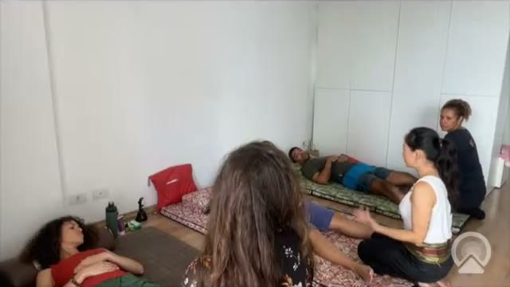
Cliente
Deitado de barriga para cima, pernas estendidas.
Terapeuta
Ajoelhado aos pés do cliente.
Região
Pés, tornozelos, joelhos e quadril.
Ferramenta
Mãos.
Objetivo
Sentir a mobilidade e comparar os dois lados antes de começar. O lado mais preso recebe mais atenção.
Cuidados
Movimento solto, sem forçar. É avaliação, não tratamento.
Passo a passo
Una as mãos e aqueça-as, mentalizando a intenção da sessão.
Segure os pés e mobilize os tornozelos com balanços leves.
Compare os lados: o que resiste mais indica onde trabalhar mais (tornozelo, joelho ou quadril).
Módulo 05 · Manobras
Módulo 05 · Manobras · Decúbito dorsal
02Decúbito dorsalPressão palmar nos pésVídeo 0:53:06
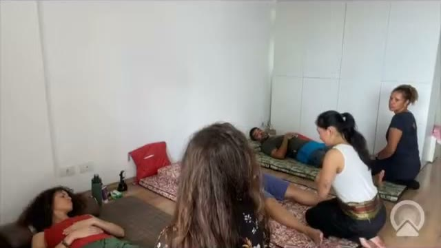
Cliente
Deitado de barriga para cima.
Terapeuta
Ajoelhado aos pés, cotovelos estendidos.
Região
Planta e dorso dos pés.
Ferramenta
Palmas, com a base da mão (o "gordinho").
Objetivo
Primeiro contato: o cliente sente o toque e o terapeuta começa a perceber o que está em desequilíbrio.
Cuidados
Use o peso do corpo, não a força dos braços.
Passo a passo
Ponto 1 no calcanhar, ponto 2 no meio do pé, ponto 3 próximo dos dedos.
Pressione para baixo com a base da mão e volte: 1, 2, 3, 2, 1.
Caminhe de um pé para o outro, transferindo o peso como numa dança, sempre com os cotovelos esticados.
Termine com as duas mãos juntas nos três pontos.
03Decúbito dorsalCaminhada palmar na parte interna da pernaVídeo 0:54:24
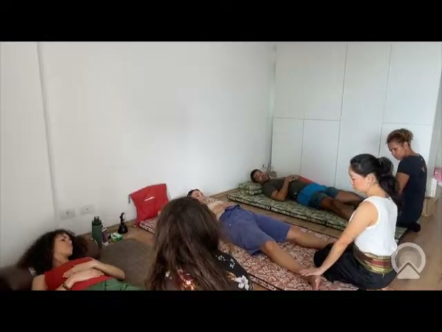
Cliente
Deitado, perna levemente rodada para fora.
Terapeuta
Ajoelhado ao lado da perna, quadril elevado.
Região
Face interna da perna e da coxa.
Ferramenta
Palma espalmada, polegar para cima.
Objetivo
Soltar a musculatura interna da perna e relaxar o cliente.
Cuidados
No joelho não há pressão, só um círculo. Observe o rosto do cliente e ajuste a pressão.
Passo a passo
Do calcanhar, suba pela parte interna da perna com pressão palmar, devagar, "como um elefante".
No joelho, faça um movimento circular para fora, sem pressão.
Continue até próximo da virilha, sustente e conte até três ou quatro.
Volte caminhando pelo mesmo trajeto. Se a pressão estiver forte, leve o peso mais para o joelho de apoio.
Módulo 05 · Manobras
Módulo 05 · Manobras · Decúbito dorsal
04Decúbito dorsalPedalinho: mobilidade de quadrilVídeo 0:59:15
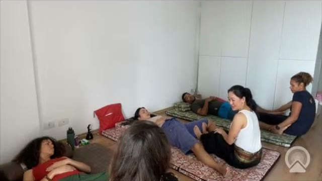
Cliente
Deitado, perna flexionada.
Terapeuta
Sentado entre as pernas do cliente, segurando o tornozelo.
Região
Quadril e parte interna da coxa.
Ferramenta
Pés (empurram) e mão (puxa e solta).
Objetivo
Mobilizar o quadril com movimento rítmico, sem esforço do terapeuta.
Cuidados
Ajuste a amplitude à mobilidade do cliente e ao seu tamanho.
Passo a passo
Segure o tornozelo do cliente e apoie um pé próximo ao joelho dele, na parte interna.
Empurre a cerca de 45 graus até a perna dobrar.
Alterne os pés como se pedalasse: um pé empurra enquanto a mão solta, o outro vem enquanto a mão puxa.
Vá subindo pela coxa até perto da virilha.
05Decúbito dorsalInfinito: posterior e interno da coxaVídeo 1:02:31
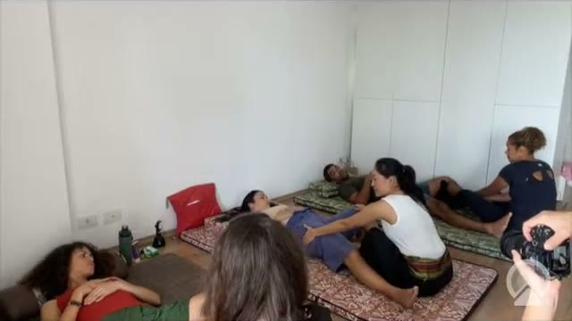
Cliente
Deitado, perna cruzada sobre a perna do terapeuta.
Terapeuta
Sentado, joelho levemente dobrado para fora, formando um "8" com a perna do cliente.
Região
Posterior e parte interna da coxa.
Ferramenta
Planta do pé; a lateral do pé para mais pressão.
Objetivo
Trabalhar a musculatura posterior, ótima para quem corre, escala ou joga futebol.
Cuidados
Entre e saia contando 1, 2, 3. Se o quadril do cliente sai do chão, há compensação: diminua.
Passo a passo
Encaixe o pé esquerdo próximo ao joelho, jogue seu joelho para fora e traga a perna do cliente por cima, travando-a.
Apoie o calcanhar do cliente com a mão, só para manter uma leve tensão.
Com o outro pé, pressione a coxa em dois a cinco pontos, conforme o tamanho do cliente.
Para mais intensidade, use a lateral do pé, "como uma faca".
Deitado, joelho dobrado, calcanhar perto do glúteo.
Terapeuta
Ajoelhado, prendendo o pé do cliente entre os joelhos.
Região
Lombar, por meio da tração da perna.
Ferramenta
Mãos próximas ao joelho e peso do corpo.
Objetivo
Tracionar a lombar. Muitas vezes a coluna estala só com esse movimento.
Cuidados
Quanto mais longe da articulação a pegada, maior a alavanca. Comece com pouco.
Passo a passo
Traga o calcanhar o mais perto possível do glúteo.
Prenda o pé do cliente entre os seus joelhos (o "sanduíche").
Segure a coxa próximo ao joelho, estique os braços e leve o seu corpo para trás.
Mantenha a tração e faça várias pequenas trações, inclusive levemente para dentro e para fora.
07Decúbito dorsalTripé: avanço na perna flexionadaVídeo 1:05:49
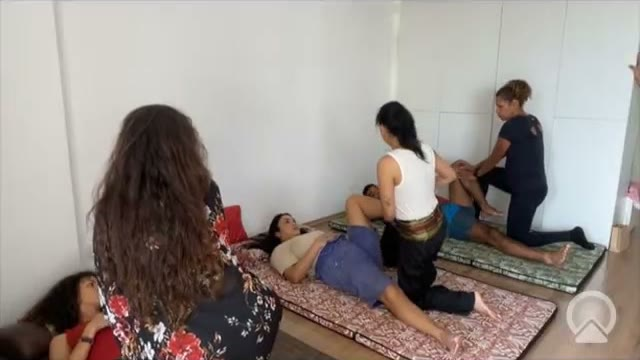
Cliente
Deitado, joelho em direção ao peito.
Terapeuta
Em afundo, pé ao lado do quadril do cliente, o pé dele apoiado na sua crista ilíaca.
Região
Quadril e glúteo.
Ferramenta
Mão de dentro (três pontos) e o peso do corpo.
Objetivo
Destravar e mobilizar o quadril.
Cuidados
A mão de fora é só apoio, sem força.
Passo a passo
Apoie o pé do cliente na dobra do seu quadril.
Com a mão de dentro, apoie em três pontos da coxa: perto da virilha, no meio e perto do joelho.
Faça um avanço, como na academia, levando o joelho do cliente em direção ao peito, e volte.
Ajuste o seu pé para a frente se o cliente tiver muita mobilidade.
Módulo 05 · Manobras
Módulo 05 · Manobras · Decúbito dorsal
08Decúbito dorsalCompasso: abertura do quadrilVídeo 1:07:57
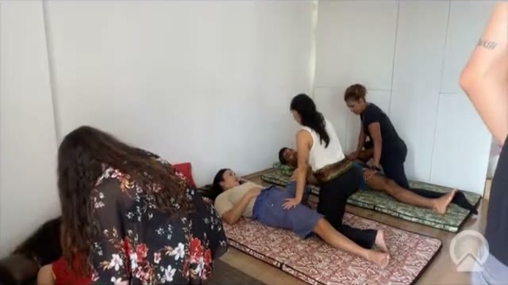
Cliente
Deitado, joelho tombado para fora.
Terapeuta
Ajoelhado ao lado.
Região
Quadril (rotação externa e abdução).
Ferramenta
Mãos.
Objetivo
Aumentar a amplitude do quadril em pessoas rígidas e com dor lombar.
Cuidados
Pare quando sentir que o movimento travou.
Passo a passo
Deixe o joelho do cliente cair para fora.
Com uma mão de apoio, desenhe meios círculos em três pontos: para baixo em direção ao chão e para cima em direção à axila, como um compasso.
Para mais amplitude, prenda a outra perna do cliente com o seu pé e use as duas mãos.
09Decúbito dorsalTorção e alongamento transversalVídeo 1:10:13
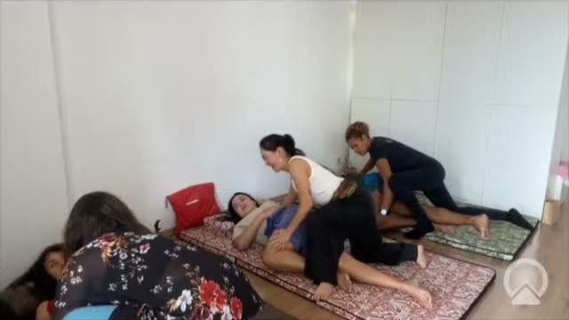
Cliente
Deitado, perna cruzada para o outro lado.
Terapeuta
Em afundo, pés encaixados junto ao quadril do cliente.
Região
Lombar, glúteo e fibras transversas das costas.
Ferramenta
Mãos na coxa e o peso do corpo.
Objetivo
Torção da coluna e alongamento profundo da região lateral do quadril.
Cuidados
Vá e volte devagar. Não faça em quem tem cirurgia recente na coluna.
Passo a passo
Leve o joelho do cliente para o outro lado em direção ao chão, com o seu pé travando para ele não sair do lugar.
Encaixe um pé no espaço entre as pernas dele e o outro colado à coxa.
Apoie a perna do cliente sobre a sua crista ilíaca e faça um afundo para a frente.
Para aumentar, empurre a coxa para baixo com as mãos.
Módulo 05 · Manobras
Módulo 05 · Manobras · Decúbito dorsal
10Decúbito dorsalBalanço diagnósticoVídeo 1:34:11
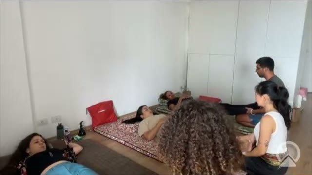
Cliente
Deitado, sem travesseiro.
Terapeuta
Ajoelhado aos pés, tornozelos do cliente sobre a sua coxa.
Região
Corpo inteiro.
Ferramenta
Mãos.
Objetivo
Ver onde o corpo está preso: o balanço deve chegar até a cabeça, como uma onda.
Cuidados
Se o tórax ou o pescoço se movem em bloco, ali há tensão a trabalhar.
Passo a passo
Segure por baixo dos calcanhares.
Balance o corpo do cliente em ritmo suave.
Observe se o movimento chega ao nariz. Onde ele para é onde está o bloqueio.
11Decúbito dorsalTração da perna em péVídeo 1:37:14
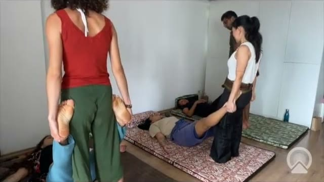
Cliente
Deitado.
Terapeuta
Em pé, a perna do cliente encaixada atrás do seu glúteo.
Região
Lombar e quadril.
Ferramenta
Peso do corpo.
Objetivo
Tracionar a lombar e soltar o quadril.
Cuidados
Mantenha a tração o tempo todo, sem soltar.
Passo a passo
Gire o pé do cliente levemente para dentro.
Encaixe a perna dele atrás do seu quadril e segure na altura do seu ombro.
Jogue o corpo para trás: a tração chega até a cabeça do cliente.
Sem perder a tração, desloque-se de um lado para o outro.
Módulo 05 · Manobras
Módulo 05 · Manobras · Decúbito dorsal
12Decúbito dorsalAlongamento posterior em 4Vídeo 1:39:19
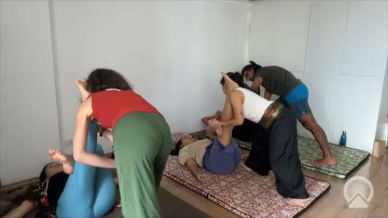
Cliente
Deitado, perna apoiada no ombro do terapeuta.
Terapeuta
Em pé ou agachado, em postura de guerreiro.
Região
Posterior da coxa e lombar.
Ferramenta
Ombro, mãos e peso do corpo.
Objetivo
Alongar o posterior para soltar a lombar.
Cuidados
Mantenha a sua coluna alinhada e use o corpo como alavanca, não os braços.
Passo a passo
Toque atrás do joelho do cliente com o seu joelho para ele dobrar sozinho.
Forme um "4" com a perna e leve-a até o seu ombro.
Com uma mão no pé e outra atrás da coxa, incline o corpo para a frente e alongue.
Variação: braço estendido na perna do cliente, em postura de guerreiro.
13Decúbito dorsalPés na crista: joelhos ao chãoVídeo 1:41:50
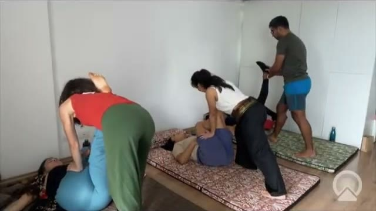
Cliente
Deitado, as duas pernas dobradas.
Terapeuta
Em pé, os pés do cliente apoiados na sua crista ilíaca.
Região
Quadril e lombar.
Ferramenta
Peso do corpo, mãos nas canelas.
Objetivo
Soltar o quadril e a lombar com o peso do corpo.
Cuidados
Base aberta e postura alinhada.
Passo a passo
Apoie os dois pés do cliente na sua crista, com as pontas para fora.
Coloque as mãos próximas às canelas.
Leve os joelhos do cliente em direção ao chão, usando só o peso do corpo, e solte o ar.
Módulo 05 · Manobras
Módulo 05 · Manobras · Decúbito dorsal
14Decúbito dorsalTração do trapézioVídeo 1:44:11
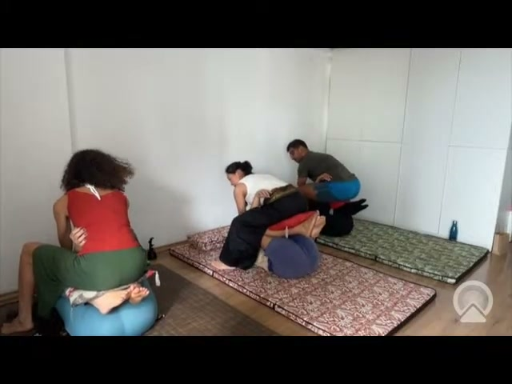
Cliente
Deitado, braços ao lado do corpo.
Terapeuta
Sentado sobre os pés do cliente, com uma almofada entre vocês.
Região
Trapézio e cervical.
Ferramenta
Mãos e o peso do corpo.
Objetivo
Tracionar e relaxar o pescoço e os ombros.
Cuidados
Peça para o cliente soltar a cabeça. A almofada deixa o contato mais confortável.
Passo a passo
Coloque uma almofada sobre os pés do cliente e sente-se próximo aos joelhos.
Segure o trapézio com as duas mãos.
Empurre o seu quadril para trás para tracionar e saia devagar.
Pode alternar de um lado para o outro.
Módulo 05 · Manobras
Módulo 05 · Manobras · Decúbito ventral
Decúbito ventral
Cliente deitado de barriga para baixo. As costas são a região que mais concentra queixas.
15 Pressão palmar ao lado da coluna
16 Para baixo e para fora
17 Alongamento do ombro com o braço na coxa
18 Pisada na planta dos pés
19 Panturrilha com o antebraço
20 Posterior da coxa com a canela
21 Alongamento do psoas
22 Apoio sob a crista ilíaca
23 Extensão com os punhos
15Decúbito ventralPressão palmar ao lado da colunaVídeo 2:21:40
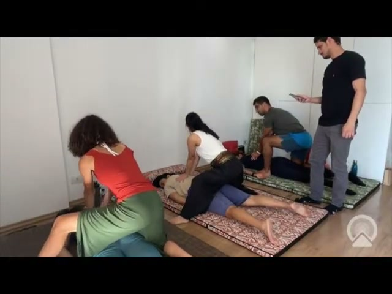
Cliente
Deitado de barriga para baixo.
Terapeuta
Em tripé, ao lado do cliente.
Região
Musculatura paravertebral, da lombar para cima.
Ferramenta
Palmas.
Objetivo
Soltar a musculatura das costas.
Cuidados
Nunca pressione sobre a coluna. Pode repetir várias vezes.
Passo a passo
Comece próximo da lombar, com as palmas espalmadas ao lado da coluna.
Pressione para baixo e solte, subindo pelas costas.
Repita a pressão também na lateral do tronco.
Variação: com os joelhos sobre o glúteo do cliente, mesma pressão ao lado da coluna.
Módulo 05 · Manobras
Módulo 05 · Manobras · Decúbito ventral
16Decúbito ventralPara baixo e para foraVídeo 2:22:31
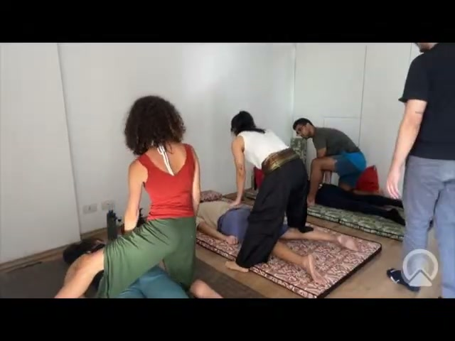
Cliente
Deitado de barriga para baixo.
Terapeuta
Ao lado do cliente.
Região
Musculatura paravertebral.
Ferramenta
As duas mãos lado a lado.
Objetivo
Afastar e soltar a musculatura presa ao lado da coluna.
Cuidados
Acompanhe a respiração do cliente.
Passo a passo
Coloque uma mão ao lado da outra, junto à coluna.
Pressione para baixo e deslize para fora.
Suba e desça pelas costas e repita do outro lado.
17Decúbito ventralAlongamento do ombro com o braço na coxaVídeo 2:23:53
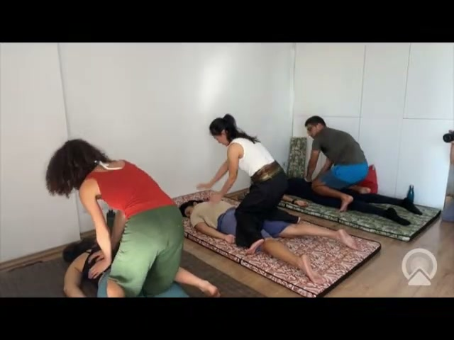
Cliente
Deitado, cabeça virada para o lado oposto.
Terapeuta
Ajoelhado em tripé, o braço do cliente sobre a sua coxa.
Região
Ombro e trapézio.
Ferramenta
Mãos e o peso do corpo.
Objetivo
Abrir e alongar o ombro.
Cuidados
Não puxe: o alongamento vem de sentar nos calcanhares.
Passo a passo
Traga a mão do cliente sobre a sua coxa, palma para baixo.
Segure por baixo do ombro, como um gancho.
Sente-se nos calcanhares: o corpo faz o alongamento.
Variação com a palma virada para cima, alongando o bíceps.
Módulo 05 · Manobras
Módulo 05 · Manobras · Decúbito ventral
18Decúbito ventralPisada na planta dos pésVídeo 2:26:31
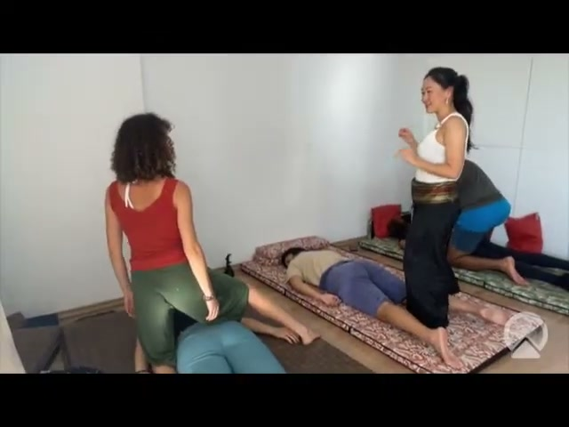
Cliente
Deitado de barriga para baixo.
Terapeuta
Em pé, de costas para o cliente.
Região
Planta dos pés.
Ferramenta
Meio do pé; a lateral do pé para mais intensidade.
Objetivo
Soltar a fáscia plantar e estimular os pontos de reflexologia.
Cuidados
Cuidado com os dedos. Pode doer um pouco: vá com calma.
Passo a passo
Pise com o meio do seu pé no meio do pé do cliente.
Trabalhe os dois pés juntos ou um de cada vez, como em um afundo.
Para mais intensidade, use a lateral do pé. Pode ficar de cinco a dez minutos.
19Decúbito ventralPanturrilha com o antebraçoVídeo 2:29:54
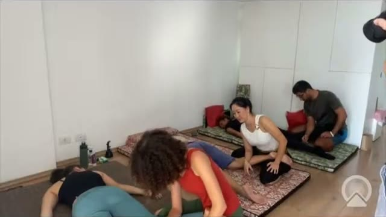
Cliente
Deitado, joelho dobrado, pé apoiado na coxa do terapeuta.
Terapeuta
Sentado a 45 graus, como um samurai.
Região
Panturrilha.
Ferramenta
Antebraço.
Objetivo
Liberar a panturrilha sem precisar de dor.
Cuidados
Liberação não precisa machucar. Onde houver tensão, apenas sustente.
Passo a passo
Apoie o pé do cliente perto da sua virilha.
Leve o corpo à frente e gire o antebraço sobre a panturrilha, de palma para baixo a palma para cima.
Onde sentir um nódulo, pare e sustente de 10 a 20 segundos.
Termine com batidinhas leves, de mão fechada.
Módulo 05 · Manobras
Módulo 05 · Manobras · Decúbito ventral
20Decúbito ventralPosterior da coxa com a canelaVídeo 2:31:21
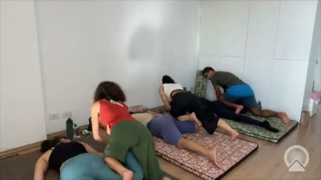
Cliente
Deitado, joelho aberto para fora.
Terapeuta
Ajoelhado, a canela encaixada na coxa do cliente.
Região
Posterior e lateral da coxa.
Ferramenta
Canela; a mão no chão dá estabilidade.
Objetivo
Pressão ampla e confortável na coxa.
Cuidados
Variação tradicional: com o pé, em pé, para quem tem pé grande.
Passo a passo
Abra o joelho do cliente para fora e encaixe a sua canela.
Apoie a mão no chão e trave o corpo.
Solte o ar e pressione; suba ponto a ponto pela coxa.
21Decúbito ventralAlongamento do psoasVídeo 2:33:04
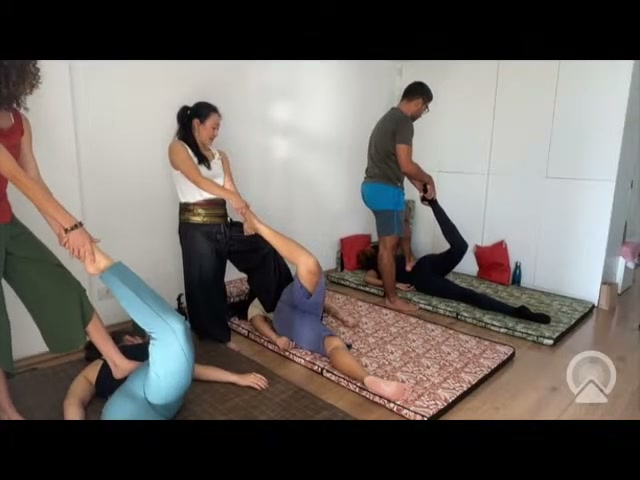
Cliente
Deitado, cabeça virada para o lado.
Terapeuta
Em pé do lado oposto, segurando o pé e o calcanhar.
Região
Psoas e flexores do quadril.
Ferramenta
Mãos; a ponta do pé apenas apoia a lombar.
Objetivo
Alongar o psoas, encurtado em quem passa muito tempo sentado, e aliviar a lombar.
Cuidados
O pé na lombar não faz força nenhuma: o peso fica todo na sua outra perna.
Passo a passo
Segure a ponta do pé e o calcanhar do cliente.
Dê alguns passos para trás, a cerca de 45 graus.
Apoie apenas a ponta do outro pé na lombar.
Puxe a perna para trás com suavidade e volte.
Módulo 05 · Manobras
Módulo 05 · Manobras · Decúbito ventral
22Decúbito ventralApoio sob a crista ilíacaVídeo 2:34:44
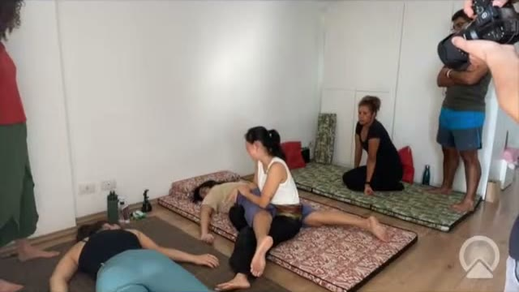
Cliente
Deitado, quadril apoiado sobre a coxa do terapeuta.
Terapeuta
Sentado, com a coxa sob a crista ilíaca do cliente.
Região
Lombar e quadril.
Ferramenta
Coxa e o peso do próprio cliente.
Objetivo
Aliviar a crise lombar sem força.
Cuidados
Em crise de dor não se usa força: aqui o alívio vem do apoio e do balanço.
Passo a passo
Dobre a perna do cliente, segurando o joelho.
Escorregue a sua coxa por baixo, até ficar sob a crista ilíaca dele.
Estique a perna do cliente e deixe-o relaxar. Pode fazer um balanço leve.
Pode ficar uns cinco minutos. Para sair, dobre a perna e deslize devagar.
23Decúbito ventralExtensão com os punhosVídeo 2:36:58
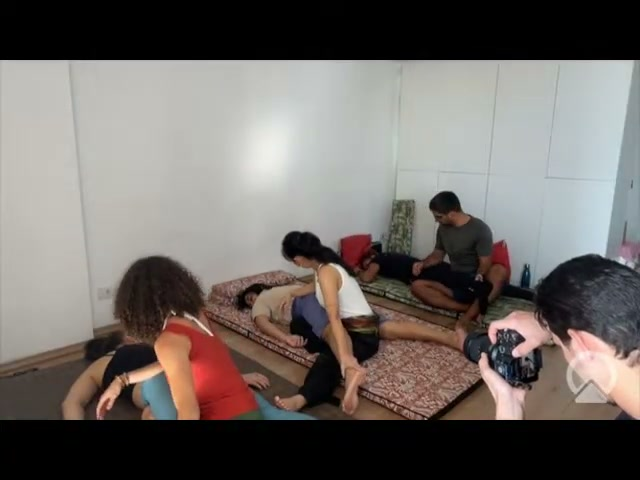
Cliente
Deitado, segurando os punhos do terapeuta.
Terapeuta
Ajoelhado, os joelhos na dobra do glúteo do cliente.
Região
Coluna, peito e abdômen.
Ferramenta
Peso do corpo.
Objetivo
Estender a coluna e abrir o peito.
Cuidados
Conduza a mão do cliente até o seu punho: não peça só com palavras.
Passo a passo
Encaixe os joelhos na dobra do glúteo.
Deslize a mão pelo braço do cliente até o punho; os dois seguram o punho um do outro.
Na expiração, sente-se nos calcanhares, elevando o tronco dele. O cliente olha para cima.
Volte devagar e repita. Para cliente grande: em pé, com agachamento.
Módulo 05 · Manobras
Módulo 05 · Manobras · Decúbito lateral
Decúbito lateral
Cliente deitado de lado. Ótima posição para a lombar profunda, o pescoço e a escápula.
24 Quadrado lombar: três pontos
25 Tração do ombro
26 Base do crânio
27 Gancho na escápula
28 Alongamento lateral com o braço
29 Abertura do peito com os pés
30 Torção lateral com agachamento
24Decúbito lateralQuadrado lombar: três pontosVídeo 2:53:13
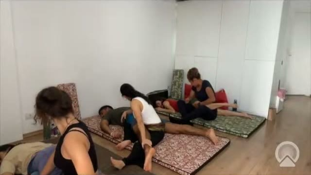
Cliente
Deitado de lado.
Terapeuta
Sentado de frente para o ponto, bem colado ao cliente.
Região
Quadrado lombar, a parte mais profunda da lombar.
Ferramenta
Polegares sobrepostos.
Objetivo
Aliviar a lombar, inclusive em crise.
Cuidados
Dói em todo mundo. Pergunte a dor de 0 a 10: trabalhe até 7, ou 3 a 4 em pessoas sensíveis. Antebraço só para quem tem prática.
Passo a passo
Localize a coluna, a última costela e a crista ilíaca: entre elas há um espaço vazio.
Ponto 1: um dedo ao lado da coluna. Ponto 2: logo acima. Ponto 3: no espaço entre a costela e a crista.
Pontos 1 e 2: com os polegares sobrepostos, pressione em direção ao umbigo por 10 segundos.
Ponto 3: pressione em direção ao chão. Entre contando 1, 2, 3 e saia do mesmo jeito.
Módulo 05 · Manobras
Módulo 05 · Manobras · Decúbito lateral
25Decúbito lateralTração do ombroVídeo 2:57:32
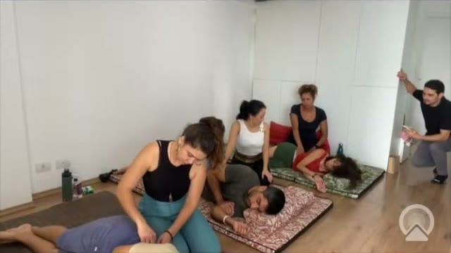
Cliente
Deitado de lado, braço solto.
Terapeuta
Sentado, encostado perto da escápula do cliente.
Região
Ombro.
Ferramenta
Mãos.
Objetivo
Soltar o ombro.
Cuidados
Movimento leve.
Passo a passo
Segure o ombro do cliente.
Puxe em sua direção e volte, algumas vezes.
26Decúbito lateralBase do crânioVídeo 2:58:01
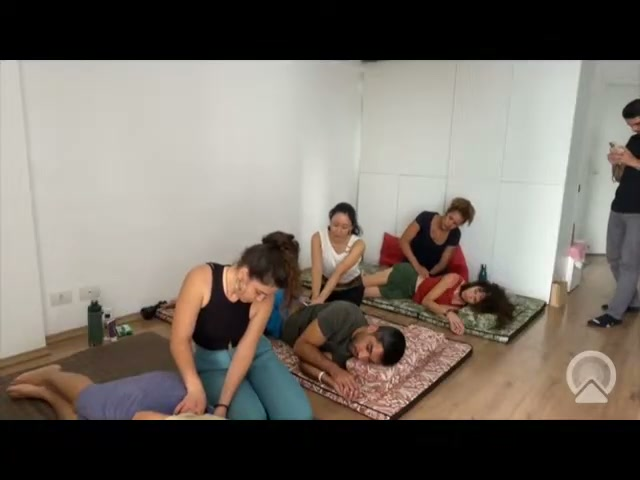
Cliente
Deitado de lado.
Terapeuta
Sentado atrás, perto da cabeça.
Região
Base do crânio e cervical.
Ferramenta
Base da mão; dedos com suavidade.
Objetivo
Aliviar a tensão do pescoço e a dor de cabeça.
Cuidados
Região sensível: faça suave. Termine com movimentos circulares, sem força.
Passo a passo
Palpe a base do crânio, junto à raiz do cabelo.
Empurre em direção ao centro da cabeça enquanto puxa o ombro para baixo.
Trabalhe dois ou três pontos.
Finalize com círculos leves para tirar a sensação de dor.
Módulo 05 · Manobras
Módulo 05 · Manobras · Decúbito lateral
27Decúbito lateralGancho na escápulaVídeo 2:59:56
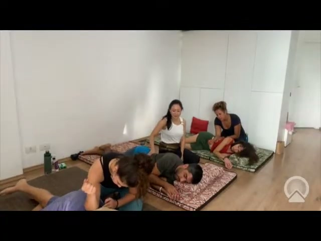
Cliente
Deitado de lado, braço solto.
Terapeuta
Sentado atrás.
Região
Borda da escápula.
Ferramenta
Dedos em gancho.
Objetivo
Soltar a escápula.
Cuidados
O braço do cliente precisa estar bem relaxado.
Passo a passo
Encontre a escápula e encaixe os dedos por baixo da borda.
Puxe em sua direção e solte. Repita.
28Decúbito lateralAlongamento lateral com o braçoVídeo 3:01:00
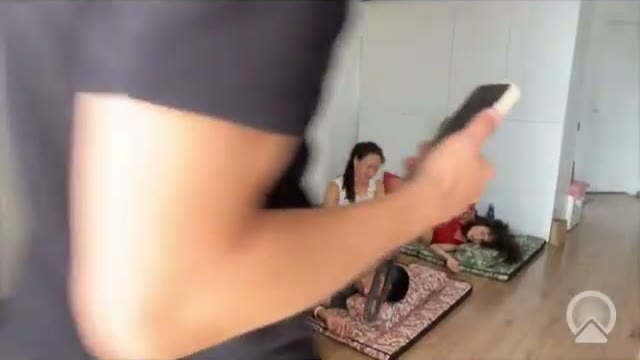
Cliente
Deitado de lado, braço sobre a coxa do terapeuta.
Terapeuta
Em tripé, atrás do cliente.
Região
Lateral do tronco e ombro.
Ferramenta
Mãos; uma apoia na crista ilíaca.
Objetivo
Abrir espaço e alongar toda a lateral do corpo.
Cuidados
A mão na crista é só apoio.
Passo a passo
Traga o braço do cliente sobre a sua coxa, palma para baixo, e segure o punho.
Apoie a outra mão na crista ilíaca.
Alongue o braço para longe do quadril, ajustando o seu corpo ao dele.
Módulo 05 · Manobras
Módulo 05 · Manobras · Decúbito lateral
29Decúbito lateralAbertura do peito com os pésVídeo 3:01:55
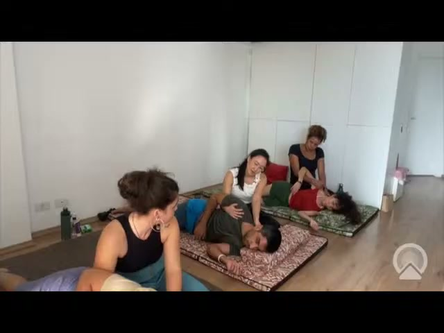
Cliente
Deitado de lado, braço levado para trás.
Terapeuta
Sentado, um pé sob a escápula e o outro ao lado da coluna.
Região
Peito e ombro.
Ferramenta
Pés (apoio) e mãos (tração).
Objetivo
Abrir o peito.
Cuidados
Movimento controlado, com a respiração.
Passo a passo
Leve o braço do cliente para trás, palma para cima, e segure a mão.
Apoie um pé sob a escápula e o outro ao lado da coluna.
Na expiração, puxe a mão em sua direção e volte.
30Decúbito lateralTorção lateral com agachamentoVídeo 3:02:52
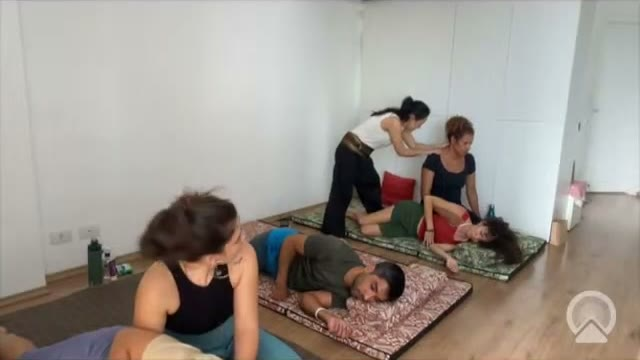
Cliente
Deitado de lado, joelho de cima dobrado formando um triângulo.
Terapeuta
Em pé, um pé atrás do joelho do cliente e o outro ao lado da lombar.
Região
Coluna e lateral do tronco.
Ferramenta
Mãos nos punhos e o peso do corpo.
Objetivo
Alongamento transversal da coluna.
Cuidados
Cirurgia recente na coluna: não faça torções. Cirurgia antiga: menos força e mais controle.
Passo a passo
Posicione os pés: um atrás do joelho, o outro ao lado da lombar.
Segure o punho do cliente e peça que ele segure o seu.
Faça um agachamento leve na expiração e volte. Pode estalar, ou não.
Módulo 05 · Manobras
Módulo 05 · Manobras · Sentado
Sentado
Cliente sentado. Fechamento da sessão, com foco no trapézio e na abertura do peito.
31 Pressão palmar no trapézio
32 Antebraço no trapézio com alongamento
33 Trapézio com tração do braço
34 Abertura do peito com a mão na orelha
35 Gato e vaca assistido
36 Inclinação lateral
37 Torção sentada
38 Remando o barco
39 Percussões de encerramento
31SentadoPressão palmar no trapézioVídeo 3:17:10
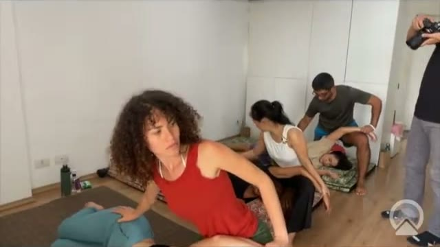
Cliente
Sentado.
Terapeuta
Atrás do cliente.
Região
Trapézio.
Ferramenta
Palmas.
Objetivo
Aquecer e soltar o trapézio.
Cuidados
Trabalhe a parte muscular, mole. Evite o osso do ombro.
Passo a passo
Palpe e encontre a parte macia do trapézio.
Pressione para baixo, perto da cervical e depois mais para fora.
Módulo 05 · Manobras
Módulo 05 · Manobras · Sentado
32SentadoAntebraço no trapézio com alongamentoVídeo 3:17:51
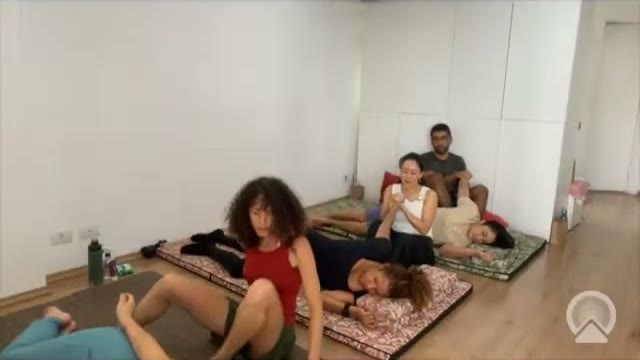
Cliente
Sentado, cabeça inclinada para o lado.
Terapeuta
Em tripé, ao lado do cliente.
Região
Trapézio, perto do pescoço.
Ferramenta
Antebraço; a mão segura a cabeça.
Objetivo
Soltar o trapézio enquanto alonga a lateral do pescoço.
Cuidados
Sem força excessiva. Para cliente grande, faça em pé.
Passo a passo
Apoie o antebraço no trapézio, perto do pescoço.
Pressione para baixo e deslize, alongando com a mão na cabeça.
Repita do outro lado.
33SentadoTrapézio com tração do braçoVídeo 3:18:59
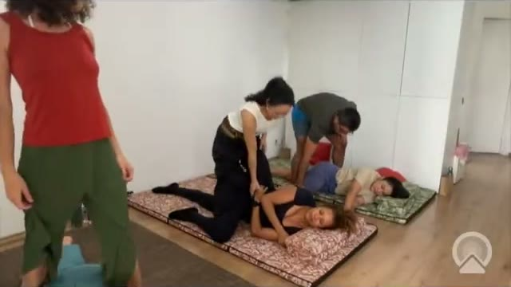
Cliente
Sentado, a mão sobre o joelho do terapeuta.
Terapeuta
Em tripé, à frente e ao lado.
Região
Trapézio e braço.
Ferramenta
Antebraço e mão.
Objetivo
Liberar o trapézio enquanto o braço se alonga.
Cuidados
Mantenha o braço do cliente esticado.
Passo a passo
Segure os dedos do cliente.
Com o antebraço, empurre o trapézio para baixo enquanto puxa o braço.
Empurre e puxe em ritmo.
Módulo 05 · Manobras
Módulo 05 · Manobras · Sentado
34SentadoAbertura do peito com a mão na orelhaVídeo 3:19:26
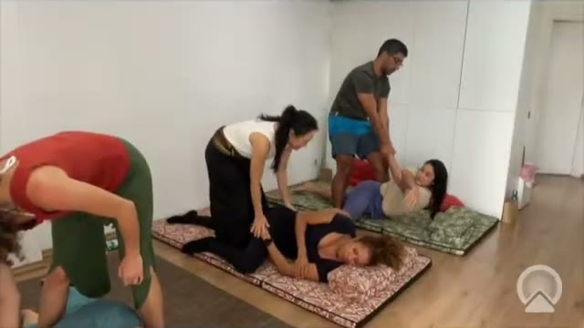
Cliente
Sentado, mão atrás da orelha.
Terapeuta
Atrás, o joelho dá apoio às costas.
Região
Peito e ombro.
Ferramenta
Mãos no punho e no cotovelo.
Objetivo
Abrir o peito.
Cuidados
O joelho só impede que o cliente saia do lugar.
Passo a passo
Leve a mão do cliente até a orelha.
Segure o punho e o cotovelo.
Inspire e, ao soltar o ar, estique o braço dele para trás.
35SentadoGato e vaca assistidoVídeo 3:20:49
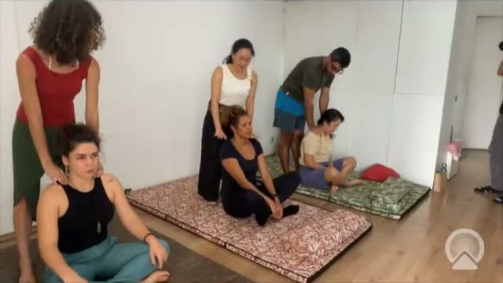
Cliente
Sentado, mãos no chão à frente.
Terapeuta
Atrás, as mãos nas costas.
Região
Coluna inteira.
Ferramenta
Mãos.
Objetivo
Mobilizar a coluna com a respiração.
Cuidados
As mãos do cliente ficam paradas no chão, não deslizam.
Passo a passo
Na inspiração, o cliente olha para cima e abre o peito.
Na expiração, arredonda as costas enquanto você empurra suavemente.
Repita algumas vezes.
Módulo 05 · Manobras
Módulo 05 · Manobras · Sentado
36SentadoInclinação lateralVídeo 3:21:25
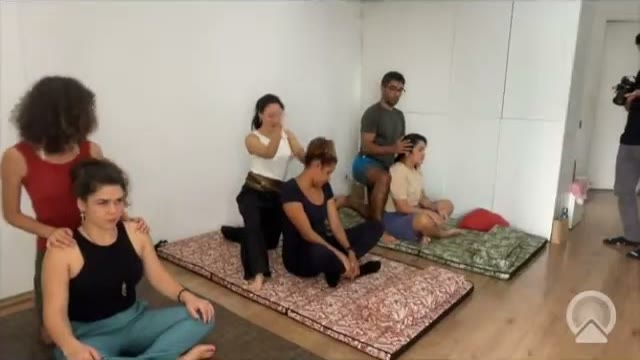
Cliente
Sentado, dedos cruzados atrás da cabeça.
Terapeuta
Atrás, o joelho apoiado sobre a coxa do cliente.
Região
Lateral do tronco.
Ferramenta
Braços e apoio do joelho.
Objetivo
Alongamento lateral.
Cuidados
Ao atender, apoie a mão nas costas do cliente para evitar contato do peito.
Passo a passo
O cliente cruza os dedos atrás da nuca.
Apoie o joelho na coxa dele, sem força.
Na inspiração, leve o corpo para o lado. Volte e repita do outro lado.
37SentadoTorção sentadaVídeo 3:23:56
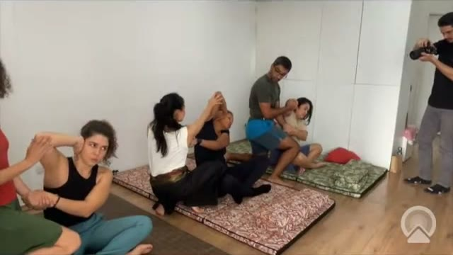
Cliente
Sentado, uma perna cruzada.
Terapeuta
Atrás.
Região
Coluna.
Ferramenta
Uma mão no braço e outra na escápula.
Objetivo
Torção da coluna.
Cuidados
Se estiver difícil, faça com a perna aberta.
Passo a passo
Passe a mão por dentro e segure o braço do lado oposto.
A outra mão apoia na escápula.
Gire o tronco na expiração e volte. Repita do outro lado.
Módulo 05 · Manobras
Módulo 05 · Manobras · Sentado
38SentadoRemando o barcoVídeo 3:24:43
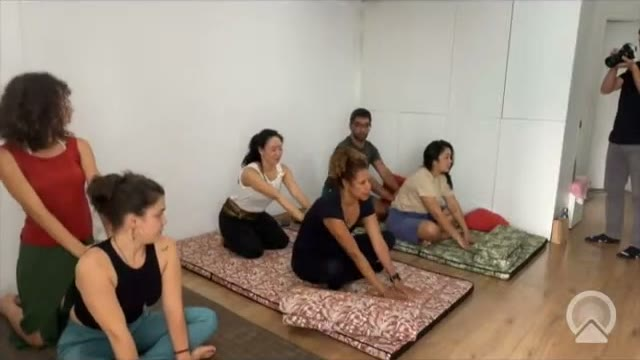
Cliente
Sentado, braços à frente, palmas para cima.
Terapeuta
Sentado atrás, pés nas costas do cliente.
Região
Costas e peito.
Ferramenta
Pés (apoio) e mãos (punhos).
Objetivo
Alongar a coluna e abrir o peito.
Cuidados
Força de no máximo 20%: só estique os joelhos, não puxe com os braços.
Passo a passo
Segurem o punho um do outro.
Apoie os pés sob as escápulas, ao lado da coluna.
Apenas estique os joelhos. O cliente olha para cima.
Mude os pés de lugar ao longo das costas.
39SentadoPercussões de encerramentoVídeo 3:26:18
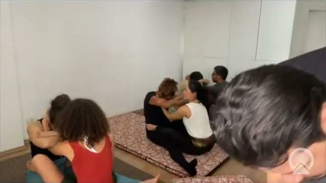
Cliente
Sentado.
Terapeuta
Atrás.
Região
Costas e trapézio.
Ferramenta
Mãos em concha e mãos unidas.
Objetivo
Finalizar e despertar o corpo.
Cuidados
Use a base da mão firme e os dedos soltos para fazer o som.
Passo a passo
Concha: mãos em concha, com um espaço no meio. Percuta de dentro para fora, de fora para dentro, de cima para baixo e de baixo para cima.
Mãos unidas, como em prece: percuta com os dedos soltos, na mesma ordem.
Termine com a intenção e o agradecimento.
Módulo 05 · Manobras
Módulo 05 · Manobras · Complemento do livro
Complemento do livro
Variações da sequência sentada descritas no capítulo "Manual de Thai Massagem Passo a Passo" do livro de referência, que complementam a aula. Ilustrações de André Utimura, reproduzidas do livro Nuad Thai: Thai Massagem.
40 Torção com apoio do antebraço
41 Thai Toilet
42 Círculos palmares e giros de antebraço
40Complemento do livroTorção com apoio do antebraçoLivro, fig. 128
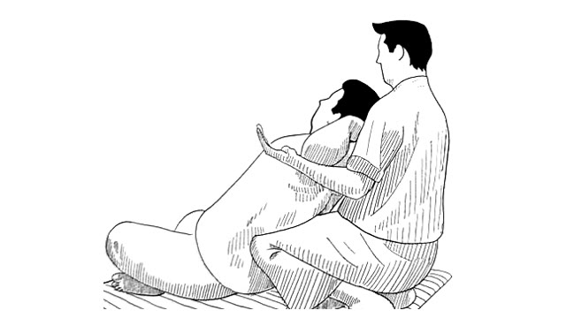
Cliente
Sentado, uma mão sobre o ombro oposto.
Terapeuta
Atrás do cliente, uma perna apoiando as costas dele.
Região
Coluna torácica e lombar, cinturas escapular e pélvica.
Ferramenta
Mãos sustentando o antebraço do cliente.
Objetivo
Torção da coluna com dissociação das cinturas e ajuste postural.
Cuidados
Hérnia de disco, osteoporose e dor lombar aguda: amplitude reduzida ou não aplicar.
Passo a passo
O cliente cruza o braço à frente do peito.
O terapeuta sustenta o antebraço dele com as duas mãos.
Na expiração, conduz o tronco em rotação, mantendo o quadril estável.
Sustente alguns segundos, volte devagar e repita para o outro lado.
Módulo 05 · Manobras
Módulo 05 · Manobras · Complemento do livro
41Complemento do livroThai ToiletLivro, fig. 130
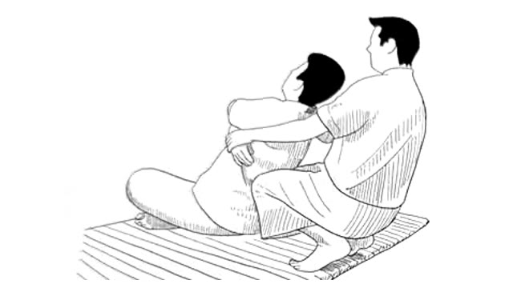
Cliente
Sentado, braços elevados ou para trás.
Terapeuta
Atrás do cliente, joelhos apoiados nas costas dele.
Região
Quadrado lombar ou região torácica.
Ferramenta
Joelhos (pressão) e mãos (tração dos braços).
Objetivo
Favorecer a extensão da coluna e abrir o peito.
Cuidados
Manobra intensa. Contraindicada em hérnia de disco, osteoporose, gestação e lombalgia aguda.
Passo a passo
Posicione os joelhos em dois pontos sobre o quadrado lombar (ou dois pontos torácicos).
Segure os braços do cliente.
Na expiração, puxe os braços para trás enquanto os joelhos sustentam a coluna.
Solte devagar e repita, respeitando o limite do cliente.
42Complemento do livroCírculos palmares e giros de antebraçoLivro, fig. 131
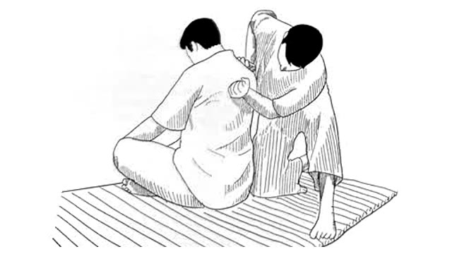
Cliente
Sentado, tronco levemente inclinado à frente.
Terapeuta
Atrás do cliente, de joelhos ou sentado.
Região
Costas, musculatura paravertebral e escápulas.
Ferramenta
Palmas e antebraços.
Objetivo
Relaxar e integrar o trabalho feito nas costas.
Cuidados
Pressão confortável, sem apoiar sobre a coluna.
Passo a passo
Faça círculos amplos com as palmas por toda a superfície das costas.
Passe para giros com o antebraço sobre a musculatura, dos dois lados da coluna.
Mantenha um ritmo lento e contínuo, acompanhando a respiração do cliente.
Módulo 05 · Manobras
Anexo · Ficha de anamnese
Ficha de anamnese
Reproduza esta ficha para cada cliente. Guarde com sigilo.
NomeData
IdadeProfissãoTelefone
Queixa principal
Desde quando / o que piora / o que melhora
Medicamentos em uso
Cirurgias e lesões anteriores
Marque se possui
Hipertensão
Problemas cardíacos
Trombose / varizes
Diabetes
Osteoporose
Hérnia de disco
Prótese articular
Gestação
Câncer (atual ou tratado)
Uso de anticoagulante
Lesão recente
Labirintite / tontura
Avaliação
Postura e observações
Testes de amplitude (antes)Testes de amplitude (depois)
Objetivo da sessão
Manobras aplicadas
Orientações de autocuidado
Assinatura do cliente (declaro que as informações são verdadeiras)
Anexos
Anexo · Glossário
Glossário
Nuadนวด Massagear, tocar com intenção terapêutica.
Nuad Boranนวดแผนโบราณ "Massagem antiga", o nome da forma tradicional.
Senเส้น Linha, canal por onde circula a energia vital.
Sen Sip As dez linhas Sen principais.
Interagente Termo usado no livro de referência para o cliente, que participa da sessão.
Nuad Raksa Nuad Thai terapêutico, de uso clínico.
Rishis "Videntes" em sânscrito; os sábios que, pela tradição, receberam o Ayurveda.
Onculi Medida tradicional equivalente à largura de uma falange do dedo do próprio cliente.
Jantala Kala e Surya Kala Nomes de Itha (lunar) e Pingkhala (solar) nas placas de Wat Pho.
Jantapusang e Rucham Nomes de Lawusang e Ulangka em Wat Pho.
Chiwhasadom Ponto ligado a Sumana, que governa a língua, a boca e os cinco sabores.
Chakala Wayo O "vento ruim", que perturba o fluxo nas linhas.
Lomลม Vento, a energia vital que circula pelas Sen.
Thatu Elementos que compõem o corpo: terra, água, vento e fogo.
Wai Khruไหว้ครู Saudação e prece de respeito aos mestres, feita antes da sessão.
Shivago Komarpaj Médico do Buda, considerado o pai da medicina tailandesa.
Watวัด Templo budista. O Wat Pho, em Bangkok, é o berço da Thai Massage.
Ruesi Dat Tonฤๅษีดัดตน Exercícios de autoalongamento dos eremitas, usados no autocuidado.
Luk Pra Kobลูกประคบ Compressa de ervas aquecida, usada junto ou após a massagem.
Metta Bondade amorosa, atitude central do terapeuta.
Brahmaviharas As quatro atitudes do coração: metta, karuna, mudita e upekkha.
Decúbito dorsal / lateral / ventral Cliente deitado de barriga para cima, de lado ou de barriga para baixo.
Anexos
Anexo · Referências
Referências
Obras consultadas na elaboração deste material. O conteúdo foi reescrito e adaptado para fins didáticos.
Nuad Thai: Thai Massagem. Livro de referência do curso. Capítulos 2 (O budismo em direção à Tailândia e o médico de Buda), 12 (Os dez canais por onde flui lom pran) e 14 (As tábuas de Wat Pho e pontos de acupressão). Ilustrações de André Utimura.
TANGTRONGCHIT, P. Manual de Thai Massagem e Pontos de Wat Pho. 2004.
Wat Pho Thai Traditional Medical and Massage School. Tamra Ya: The Philosophy Stones of Wat Pho. 2016.
HOSKIN, J. An Illustrated History of Thailand. John Beaufoy Publishing, 2016.
UNESCO. Nuad Thai, traditional Thai massage. Lista Representativa do Patrimônio Cultural Imaterial da Humanidade, 2019.
Anexos
Obrigada por estar aqui
Que cada toque seu leve presença, respeito e cuidado. A técnica você aprende com a prática. A presença você cultiva todos os dias.
INSTITUTO YUMI KATAOKA @yumikataoka · institutoyumikataoka.com.br WhatsApp (11) 98560-4140
Material de apoio didático. Não substitui avaliação médica. Proibida a reprodução sem autorização.